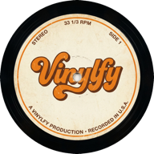

Welcome to Vinylfy
Transform your digital audio into warm, nostalgic vinyl records. Vinylfy is made for vinyl lovers who desire a vinyl-like sound in their digital audio files. Built using open source tools and technologies, Vinylfy is open source and free to use.
Introduction
Vinylfy brings the warmth and character of vintage vinyl records to your digital audio files. Whether you're producing music, creating podcasts, or just want to add that nostalgic analog feel to your recordings, Vinylfy makes it easy.
Our advanced audio processing engine authentically simulates the unique characteristics of vinyl playback, including surface noise, pops and crackles, wow and flutter, and the distinctive RIAA equalization curve used in vinyl record production.
Get started by exploring our preset collections in the Presets tab, or dive into the Configure tab to craft your own custom vinyl sound.
Preset Collections
Choose a preset or customize your own

AJW Recommended

1920s Jazz

1930s Swing

1940s Big Band

1950s Rhythm & Blues

1950s Rock & Roll

1960s Pop

1960s Psychedelic

1970s Disco

1970s Funk

1970s Rock

1980s Metal

1980s New Wave

1990s Alternative

1990s Hip Hop

2000s Indie

2000s Pop

2010s Electronic

2010s Pop

2020s Modern Vinyl

Custom
Vinyl Effects
About Vinyl Effects
These controls simulate the authentic characteristics of vinyl playback that give records their distinctive warm, nostalgic sound.
- Noise Intensity: Adds surface noise and static for that classic vinyl hiss. (Valid range: 0-100%)
- Pop Intensity: Creates random pops and crackles from dust and scratches. (Valid range: 0-100%)
- Wow & Flutter: Simulates wow and flutter from turntable speed variations. (Valid range: 0-100%)
- Distortion Amount: Adds harmonic warmth and analog saturation. (Valid range: 0-100%)
Equalizer
About Equalization
Adjust the tonal balance of your audio to match different vinyl eras or personal preference. Each slider controls a specific frequency range.
- Bass: Low frequencies add depth and warmth. (Valid range: -5 to +5 dB)
- Mid: Middle frequencies define vocals and instruments. (Valid range: -5 to +5 dB)
- Treble: High frequencies control clarity and brightness. (Valid range: -5 to +5 dB)
💡 Tip: Vintage records often have less treble due to physical limitations
Filters & Processing
About Filters & Processing
These advanced controls shape the frequency response and spatial characteristics to match authentic vinyl playback limitations.
- High-Pass Filter: Removes rumble and low-frequency noise below the set cutoff frequency. (Valid range:20-500 Hz)
- Low-Pass Filter: Cuts ultra-high frequencies that vinyl can't reproduce. (Valid range:1-20 kHz)
- Stereo Width: Adjusts the separation between left and right channels. Set the value to 0% for full mono, and 100% for full stereo.
- RIAA Curve: The industry-standard equalization curve used in vinyl production since 1954. (On/Off)
💡 Tip: Keep RIAA enabled for authentic vintage sound
Select Audio File
Drop your audio file or click to browse
⬆
Click or Drop Audio File Here
Supported: WAV, MP3, FLAC, OGG, M4A, AAC
No Results Yet
Process an audio file to see your results here. Load a File
Processing Complete! 🎵

About Vinylfy
The Vinyly Story
Vinylfy was orignally created as a peronsal project for the original creator's daughter, an
avid vinyl lover who
loved to listen to her favorite albums on vinyl. Interested in programming, she asked her
father to create a tool
that would allow her to convert her favorite digital files into vinyl records. The creator,
being a software engineer,
set out to create a tool that would allow her to convert her favorite digital files to sound
like her favoriate sound.
You'll find her influence in the presets screen as "AJW Recommended". We
certainly hope you enjoy it!
Quick Links
What's New In This Version
Loading release notes...